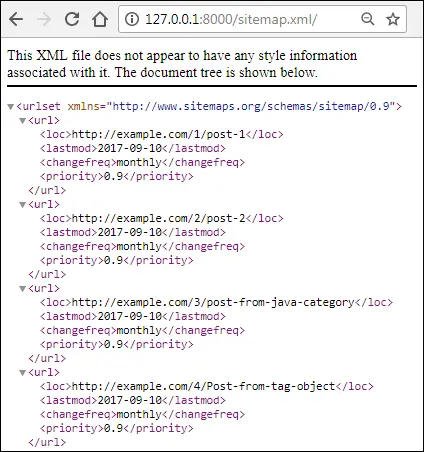
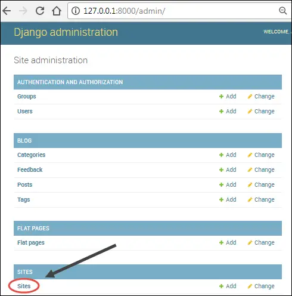
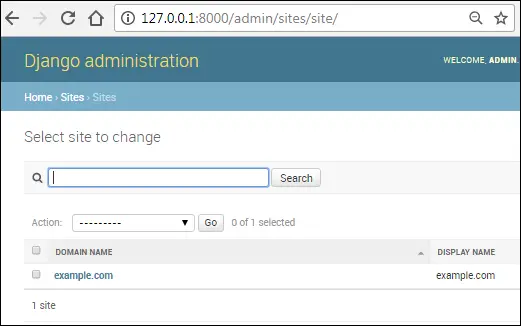
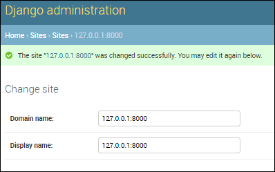

Creating Sitemaps in Django
Last updated on July 27, 2020
A Sitemap is a simple list of links in a website which you want a search engine to crawl and thus index. In addition to that they are also used to tell following information about the pages:
- How frequently the page changes.
- Last modification date of the page.
- Priority of the URL in relation to other URLs.
Types of Sitemap #
Sitemaps are of two types:
- HTML Sitemap.
- XML Sitemap.
HTML Sitesmap #
An HTML Sitemap is designed for the users to help them navigate the site. We can easily create an HTML Sitemap by simply creating a list using <ol> or <ul> tag. For example:
1 2 3 4 5 6 7 8 9 | <h2>The Great Django Blog Sitemap</h2>
<ul>
<li><a href="http://example.com">Home</a></li>
<li><a href="http://example.com/blog">Blog</a></li>
<li><a href="http://example.com/contact">contact</a></li>
<li><a href="http://example.com/careers">Careers</a></li>
<li><a href="http://example.com/eula">EULA</a></li>
</ul>
|
Remember that HTML sitemaps are for human consumption, they are not meant for search engines. For that reason, Google Webmaster Tool and others don't even allow you to submit an HTML sitemap.
XML Sitemap #
XML Sitemap is the most preferred way of creating sitemaps today. Webmaster tools provided by major search engines accepts XML sitemap. Here is an example of XML sitemap:
1 2 3 4 5 6 7 8 9 10 11 12 13 14 15 16 17 18 19 20 21 | <?xml version="1.0" encoding="UTF-8"?>
<urlset xmlns="http://www.sitemaps.org/schemas/sitemap/0.9">
<url>
<loc>http://www.example.com/home</loc>
<lastmod>2017-05-10</lastmod>
<changefreq>monthly</changefreq>
<priority>0.9</priority>
</url>
<url>
<loc>http://www.example.com/blog/</loc>
<lastmod>2017-05-10</lastmod>
<changefreq>monthly</changefreq>
<priority>0.6</priority>
</url>
<url>
<loc>http://www.example.com/contact/</loc>
<lastmod>2017-05-10</lastmod>
<changefreq>monthly</changefreq>
<priority>0.6</priority>
</url>
</urlset>
|
Django provides a sitemap framework (django.contrib.sitemaps) which automates the process of creating sitemaps.
Installing Sitemap Framework #
To use sitemap framework you must first install it in your Django project. To install it follow these steps:
Add
'django.contrib.sitemaps'to theINSTALLED_APPSlist insettings.pyfile. Sitemap framework depends upon the Sites framework (django.contrib.sites), which we have already installed in the previous lesson.In the
TEMPLATESsetting, make sure you haveBACKENDandAPP_DIRSset to'django.template.backends.django.DjangoTemplates'andTruerespectively.
At this point, INSTALLED_APPS and TEMPLATES settings should look like this:
TGDB/django_project/django_project/settings.py
1 2 3 4 5 6 7 8 9 10 11 12 13 14 15 16 17 18 19 20 21 22 23 24 25 26 27 28 29 30 31 32 33 | #...
INSTALLED_APPS = [
'django.contrib.admin',
'django.contrib.auth',
'django.contrib.contenttypes',
'django.contrib.sessions',
'django.contrib.messages',
'django.contrib.staticfiles',
'django.contrib.flatpages',
'django.contrib.sites',
'django.contrib.sitemaps',
'blog',
'cadmin'
]
#...
TEMPLATES = [
{
'BACKEND': 'django.template.backends.django.DjangoTemplates',
'DIRS': [ os.path.join(BASE_DIR, 'templates'), ],
'APP_DIRS': True,
'OPTIONS': {
'context_processors': [
'django.template.context_processors.debug',
'django.template.context_processors.request',
'django.contrib.auth.context_processors.auth',
'django.contrib.messages.context_processors.messages',
],
},
},
]
#...
|
The sitemaps framework does not require any additional table. So, this time you don't actually need to run the migrate command. We can verify this fact by running migrate command as follows:
(env) C:\Users\C\TGDB\django_project>python manage.py migrate
C:\Users\C\TGDB-V2\django_project
Operations to perform:
Apply all migrations: admin, auth, blog, contenttypes, flatpages, sessions, si
tes
Running migrations:
No migrations to apply.
(env) C:\Users\C\TGDB\django_project>Notice the output "No migrations to apply.". This tells us that sitemap framework doesn't create any additional tables.
We are now ready to create sitemaps.
Creating Sitemap Class #
To create sitemaps we use Sitemap class from django.contrib.sitemaps package. A Sitemap class represent a section of the entries in the sitemap. For example, one Sitemap class could represent all entries in your blog, while another Sitemap class represent all flatpages on the site and so on.
In our case, we want sitemap to contain links to all blogs post and flatpages. As a result, we will create two sitemap classes namely PostSitemap and FlatPageSitemap which extends Sitemap class.
Create a new file named sitemaps.py in the blog app and add the following code to it.
TGDB/django_project/blog/sitemaps.py
1 2 3 4 5 6 7 8 9 10 11 12 13 | from django.contrib.sitemaps import Sitemap
from .models import Post
class PostSitemap(Sitemap):
changefreq = "monthly"
priority = 0.9
def items(self):
return Post.objects.all()
def lastmod(self, obj):
return obj.pub_date
|
Here is how it works:
In lines 1-2, we are importing Sitemap class and the Post model.
In lines 6-7, we are setting changefreq and priority attributes. The changefreq and priority are optional class attributes which indicate how frequently the pages changes and priority of the URLs in relation to other URLs respectively.
Other possible values for changefreq attribute are:
'always''hourly''daily''weekly''monthly''yearly''never'
Similarly, priority attribute can only contain a value from 0.0 to 1.0.
The changefreq and priority class attributes corresponds to <changefreq> and <priority> XML elements. In other words, sitemap framework will use information from changefreq and priority attribute to create <changefreq> and <priority> elements.
In lines 9-10, we are defining items() method. The items() is a special method whose job is to return a list of all objects whose URLs we want to have in the sitemap. Post.objects.all() returns a list of all the post objects. By default, sitemap framework calls get_absolute_url() on each object to retrieve the URI for the posts.
In lines 12-13, we are defining optional lastmod() method. The job of the lastmod() method is to tell when the object (Post object in this case) was modified. The lastmod() method receives each Post object one by one and returns the last time Post object was modified. Notice that pub_date in obj.pub_date is coming from the Post model. We wouldn't be able to write this If we had not defined pub_date field in the Post model. The lastmod() method corresponds to <lastmod> XML element.
Our sitemap class is ready. We just need to create a URL pattern for it.
Sitemap framework (django.contrib.sitemaps) provides a view called sitemap() which facilitates the creation of sitemap from Sitemap class. The sitemap() view accepts a required argument called sitemaps which is a dictionary object mapping to short section labels (e.g. posts, stories) to its sitemap class.
Open blog's urls.py and the following URL pattern at the beginning of urlpatterns's list:
TGDB/django_project/blog/urls.py
1 2 3 4 5 6 7 8 9 10 11 | #...
from django.contrib.flatpages import views as flat_views
from django.contrib.sitemaps.views import sitemap
from .sitemaps import PostSitemap
urlpatterns = [
url(r'^sitemap\.xml/$', sitemap, {'sitemaps' : sitemaps } , name='sitemap'),
url(r'^about/$', flat_views.flatpage, {'url': '/about/'}, name='about'),
#...
]
|
Now the only thing remains is to define sitemaps variable. Just above the urlpatterns list define sitemaps variable as follows:
TGDB/django_project/blog/urls.py
1 2 3 4 5 6 7 8 9 10 11 | #...
from .sitemaps import PostSitemap
sitemaps = {
'posts': PostSitemap
}
urlpatterns = [
url(r'^sitemap\.xml/$', sitemap, {'sitemaps': sitemaps}, name='sitemap'),
#...
]
|
As already discussed, sitemaps is a dictionary which maps a short label (posts) to its Sitemap class (PostSitemap).
Our Django project is ready to serve sitemaps. Visit http://127.0.0.1:8000/sitemap.xml/ and you will see a page like this:

Our sitemap is working as expected but notice that the host portion of URL contains example.com. This domain is coming from the Django sites framework (django.contrib.sites). To Change it, login to Django admin and then visit site list page ( http://127.0.0.1:8000/admin/sites/site/ ).


Click on "example.com" in DOMAIN NAME column to edit and you will be displayed Change Site form. In the form change Domain name and Display name to 127.0.0.1:8000 and click SAVE to update the changes.

Revisit sitemap page (http://127.0.0.1:8000/sitemap.xml/) again. At this point, your sitemap should be generating URLs using 127.0.0.1:8000 as host instead of example.com. You will need to update this setting once more at the time of deployment.
Note: To checkout this version of the repository type git checkout 35a.
Load Comments